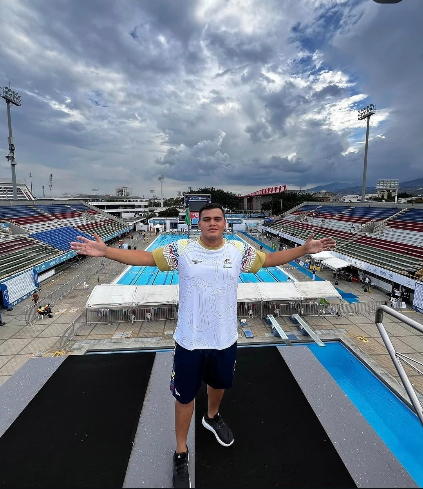

De competir en el agua a competir en los negocios.
Cuatro momentos que explican por qué a Rafael no le asusta liderar bajo presión — y por qué eso importa para quien contrata su trabajo.

Selección Tolima y selección Colombia de waterpolo. Múltiples reconocimientos MVP, medallas de bronce y plata en torneos nacionales.
Título de la Universidad de Ibagué, con tarjeta profesional vigente.
Fundador y CEO de CINCO97, MONCH y DANKAI restaurantes en Ibagué — experiencia directa en gestión y operación del sector gastronómico de la región. Hoy lidera dos marcas activas de gastronomía.
Organización y montaje de eventos familiares y empresariales.